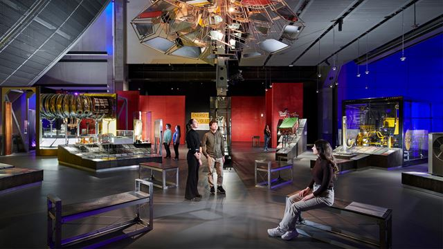

I visited the London Science Museum, including the artificial intelligence interactive exhibition area, digital art exhibition, and data visualization display, to understand how creative computing is applied in these exhibits.

The AI exhibition area in the Science Museum demonstrated various applications of AI technology in daily life, such as image recognition, emotion analysis, and natural language processing. When experiencing the image recognition project, the AI system analysed the audience’s facial expressions in real time through the camera and predicted their emotions. This experience gave me a more intuitive understanding of the applications of computer vision and emotional computing. This exhibit not only demonstrated the powerful functions of the technology but also inspired my thoughts on algorithm training and model accuracy through real-time interaction. It made me realize that creative computing is not limited to a single technology; it can be combined with psychology and sociology to bring more interdisciplinary applications and considerations.
In the data visualisation exhibition area, I experienced several projects that displayed complex data through vision, touch, and interaction. For example, an interactive chart showing global climate change allowed users to select different years by touching the screen to view the changes in global temperature and carbon dioxide concentration. The touch screen design and real-time data feedback made the abstract information intuitive and easy to understand. I learned that creative computing not only improves the visibility of data in data display but also makes the data story more immersive and engaging. This way of interactive design made me realise that in project design, we can combine visualisation and interaction to transform complex information into clear and experienceable content to enhance users’ understanding of the data.
The Science Museum also exhibited digital artworks generated by code. These works applied mathematics and algorithms to visual art creation, presenting a fusion of uncertainty and algorithmic aesthetics. A particularly attractive work for me was a dynamically generated art pattern that changed in real time on a large screen. Each layer of the pattern was generated by programming and was affected by the audience’s movements. Through observation, I found that this creative computing work combined artistic expression and technology, giving a dynamic experience different from static art. This generative art work inspired me to think about how to use code to add more fun and dynamism to future projects.
In the augmented reality experience area, I tried an AR project called “Future City”. Viewers could see a simulated future city model through tablet devices. This display not only demonstrated the possibilities of future technology but also allowed visitors to directly modify and adjust the city layout using the touch screen to immediately observe the impact of the design changes. This interactive mode not not only demonstrated the diversity of augmented reality technology but also sparked my interest in the interactive potential of creative computing. I realized that AR is not just a viewing tool but can also be a platform for users to directly participate and receive real-time feedback. Future creative projects can refer to this way to use AR to enhance participants’ understanding and engagement with the works.
To sum up, through the exploration of data visualisation, AI interaction, and AR experience, I realised that creative computing can effectively integrate education and entertainment. The displays in the Science Museum presented complex technical principles in an intuitive interactive form, allowing audiences of different ages and backgrounds to understand and experience the fun of technology. In the future, we can learn from this method in creation, using interactive ways to simplify complex information and improve users’ understanding and participation. From the AI application of emotion recognition to generative art, the Science Museum demonstrated the interdisciplinary fusion of creative computing. This made me realise that programming is not just a technical skill but can also be combined with art, psychology, data science, etc., to form a multi-level experience. In the future, I hope to try more interdisciplinary collaborations in projects, drawing inspiration from different fields to make the creation more innovative.